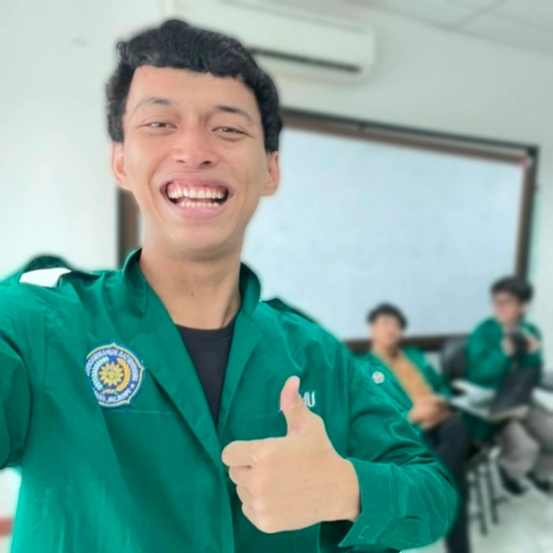

IMAGINARIUM
Majalah digital mahasiswa Teknik Informatika UHAMKA yang menggabungkan teknologi, kreativitas, dan eksplorasi dunia imajinasi.
Pilih salah satu edisi untuk mulai membaca karya yang telah kami terbitkan.
Renaisans Imajinasi
Eksplorasi dunia imajinasi, teknologi digital, dan kreativitas mahasiswa.
Masuk Edisi 1IMAGINARIUM adalah majalah digital yang dikembangkan sebagai proyek mahasiswa Teknik Informatika UHAMKA.
Melalui dua edisi yang diterbitkan, kami mencoba menghadirkan ruang yang mempertemukan logika, teknologi, dan imajinasi dalam satu media digital.

Satria

Aditya Prima

Muhammad Miftahhudin